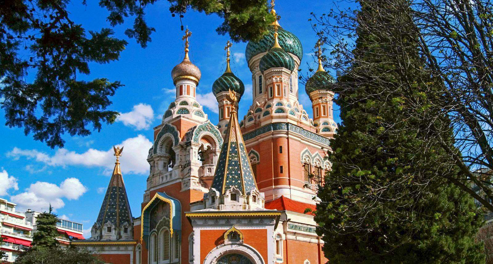

utrefois lieu favori de villégiature des anglais pendant l’hiver (c’est d’ailleurs de cela qu’elle tire son nom), elle est aujourd’hui le fer de lance de la promotion du tourisme niçois à l’international. C’est d’ailleurs sur la prom’ que se trouvent 2 des 3 hôtels 5 étoiles de Nice. Mondialement connue, cette promenade bordée de palmiers de 7 km va de la colline du Château à l’aéroport de Nice. Si vous souhaitez faire la promenade des Anglais en entier, le mieux est de louer un vélo ou des rollers.
La cathédrale Saint-Nicolas de Nice, classée monument historique, est le plus important édifice religieux du culte orthodoxe hors de la Russie. Même si très éloignée du genre de choses que vous vous attendiez à faire à Nice, cela vaut le coup d’aller y jeter un coup d’œil, ne serait-ce que pour apprécier le contraste entre l’architecture et la végétation méditerranéennes voir même les palmiers présents juste autour!
e carnaval de Nice, l’un des plus renommés du monde et plus grand de France, à lieu chaque année au mois de février, pendant 2 semaines. Les festivités attirent à chaque fois plusieurs centaines de milliers de spectateurs venus pour profiter du spectacle offert par les chars monumentaux et la célèbre bataille de fleurs sur la promenade des anglais!